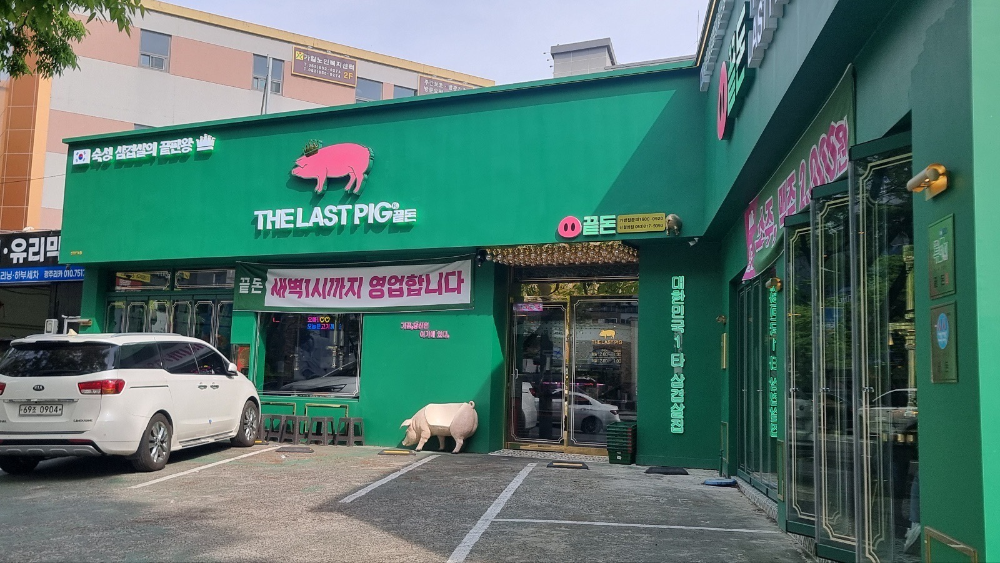
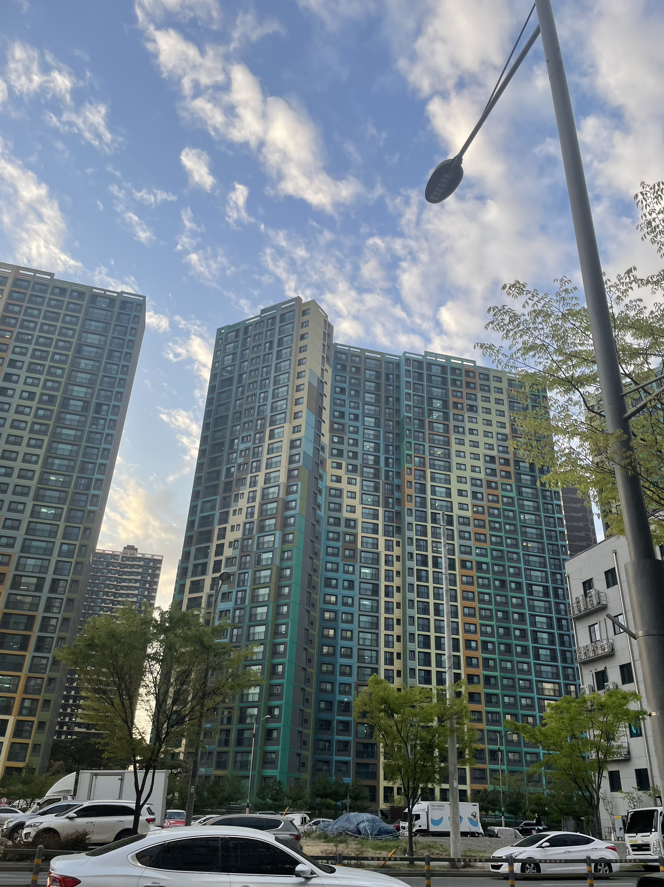
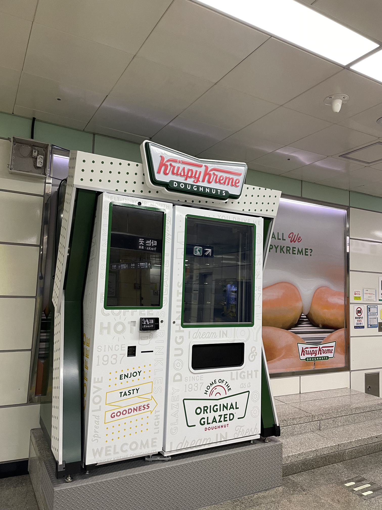
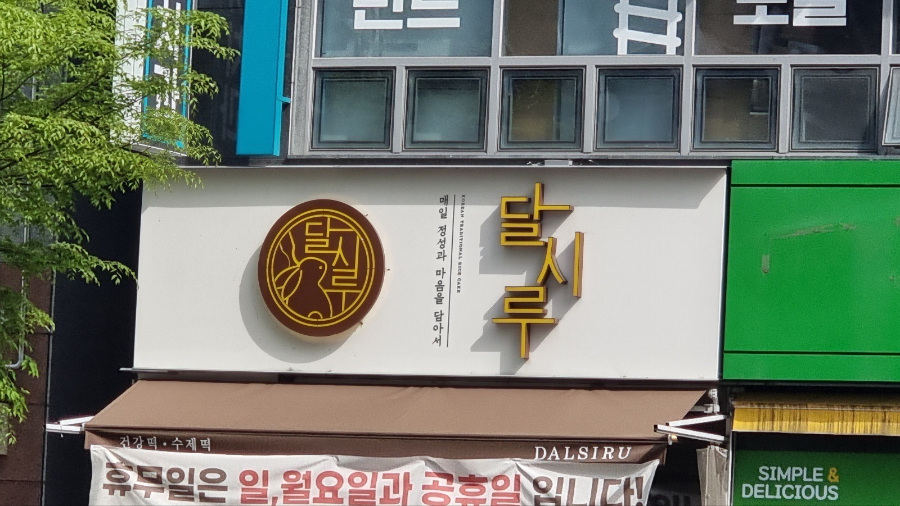
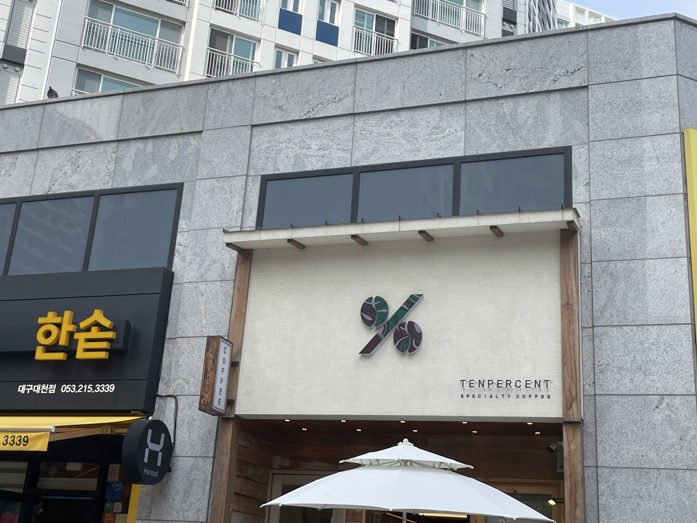
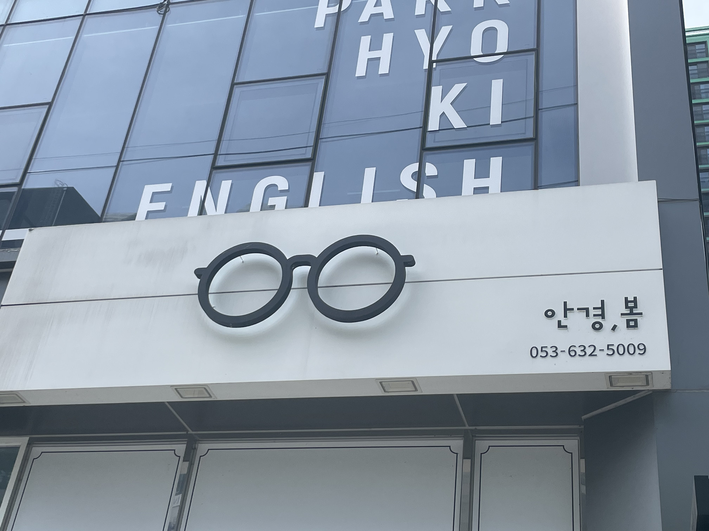
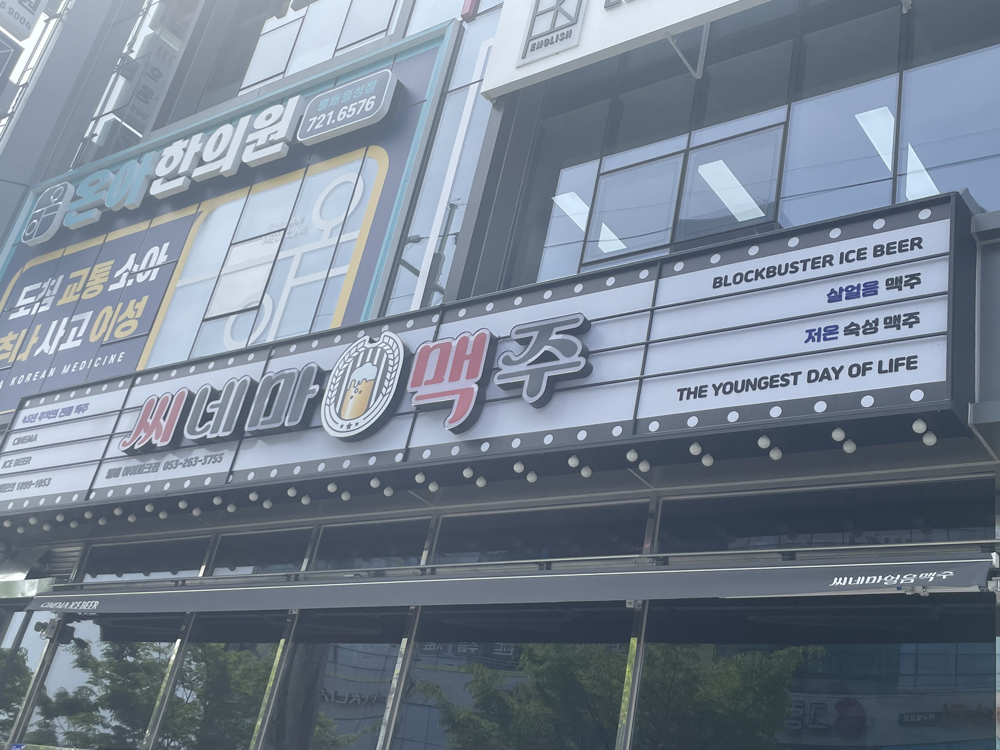
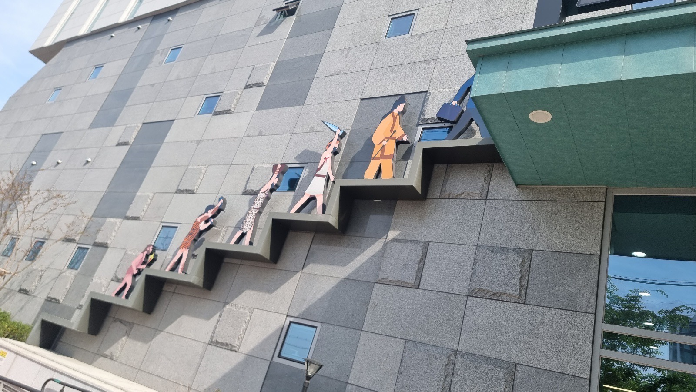
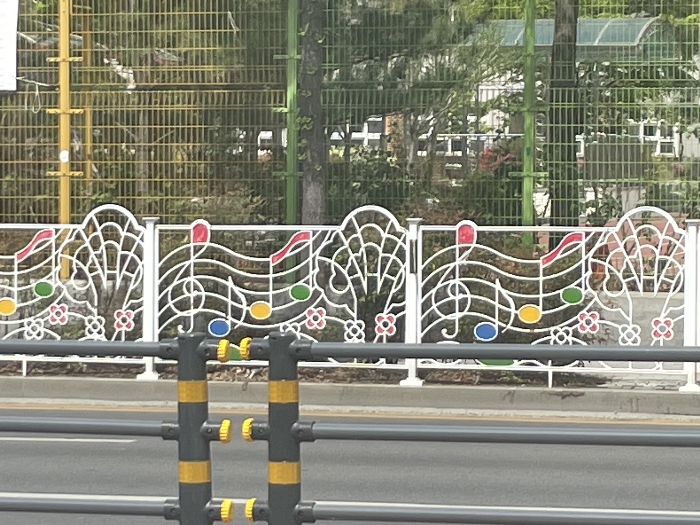
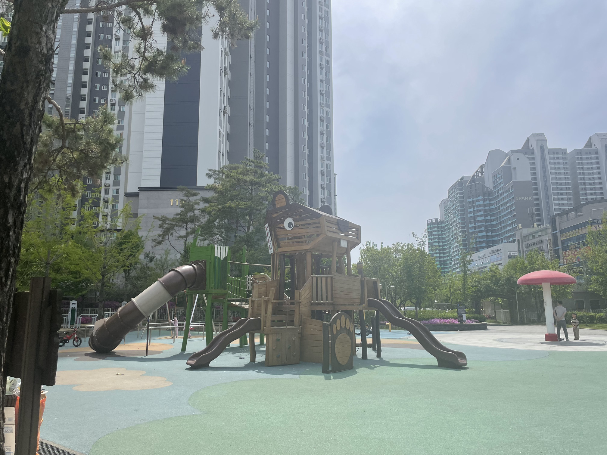

색감
음식점
이곳은 삼겹살을 판다. 형광 색감이 도는 청록색을 이용하여 건물을 구성했다. 그에 대비되는 쨍한 핑크 계열의 간판으로 더 자기 음식점을 강조하고 있다. 삼겹살을 판매해 이를 시각적으로 보이도록 돼지 모양의 간판과 의자를 사용했다. 색감과 시각적으로 볼 수 부분이 많았다.
아파트
이곳은 일반 사람들이 사는 아파트다. 하지만 다른 흰색 아파트와 달리 여러 색감으로 구성되었다. 여러 색감이 배치된 것이 마치 “테트리스라”는 게임처럼 보였다. 색감을 잘 못 사용하면 촌스러워 보일 수 있다. 이 아파트는 이를 고려한 듯 과하지 않은 검은색을 배경색으로 두었다.
형태 및 디자인
도넛 자판기
보통의 자판기는 여러 제품을 함께 판매한다. 그래서 하나의 제품에 따라 디자인한 자판기를 잘 볼 수 없다. 이 자판기는 하나의 브랜드 제품만 판매한다. 그 때문에 이 브랜드의 대표적인 특징이 잘 녹아있다. 이것은 디자인적으로도 도 좋지만, 홍보 면에서도 기능을 뛸 수 있다. 사람들이 많이 다니는 지하철에 자신의 브랜드를 노출해 각인시킬 수 있다.
떡집
이 간판에는 보름달 안에 토끼가 떡방아를 지니고 있다. 떡이라는 단어를 들으면 떠오르는 요소를 가지고 있다. 이를 통해 이곳이 떡을 파는 곳임을 나타내고 있다. 색은 달의 노란색을 따와 만들어진 것으로 추측한다. 또한 바탕색을 같은 계열의 갈색으로 표현해 따뜻한 느낌을 주었다.
커피 판매점
“%”의 기호로 사용했다. “%”의 동그라미 부분을, 커피를 떠올릴 수 있는 원두 모양으로 구성했다. “퍼센트”라는 글자 없이도 대중들은 이곳의 이름이 “%”라는 것을 안다. “%” 기호를 가까이서 본다면 물결의 표현이 나타난다. 이처럼 미세한 부분도 시각적으로 눈길을 끌게 디자인했다.
안경점
이 간판은 로고와 안경, 봄이라는 매장 이름, 가게 전화번호가 있다. 여기서 글과 전화번호는 작게 오른쪽 아래 구석에 배치됐다. 그에 반해 안경 그림으로 된 로고는 간판 한가운데 크게 배치됐다. 배치를 통해 무엇을 강조했는지 알 수 있다. 또한 이 간판을 멀리서 보면 글자가 아닌 커다란 로고만 보인다. 하지만 로고만으로도 이곳이 무엇을 하는 곳이지 단번에 알 수 있다.
술집
이곳은 영화를 보며 술을 마시는 곳이다. 이 간판은 이것을 잘 표현했다. 영화의 상징인 영화 필름과 중간의 맥주 그림으로 간판이 구성됐다. 글을 읽지 않고 구성된 것만 보더라도 이곳은 목적을 안다. 색감은 배경은 흰색 바탕을 중심으로 빨간 글자와 검정 글자를 배치해 강조했다.
디자인 활용도
거치대
선사시대 박물관의 외관 그림 거치대이다. 그림 거치대가 처음 에는 선사 사람의 모습에서 점차 현대인의 모습으로 바뀌고 있다. 건물로 보이는 외각이 너무 밝거나 어둡지 않다. 그 때문에 그림 거치대는 뒷배경이 되는 색보다 더 강조되는 색감을 사용했다. 강조되는 색감이라고 하지만 외관을 해치지 않는 정도의 색감을 선택해 건물의 디자인을 방해하고 있지는 않다.
인도 분리대
초등학교 앞에 있는 인도 분리대이다. 이를 고려 한 듯 분리대 디자인이 여러 색감과 아기자기한 음표로 디자인 되어있다. 아이들이 좋아하는 방향으로 디자인한 것이다. 하지만 운전자에게도 아이들이 많이 다니는 길이라는 것을 표현할 수 있다. 디자인은 보기 좋은 것뿐만 아니라 그 쓰임과 목표가 있어야 한다. 이 분리대는 그것을 잘 충족했다.
다람쥐 놀이터
놀이터는 아이들이 노는 곳이다. 그 때문에 놀이터를 구성할 때 아이들이 좋아할 수 있는 것을 고려한다. 아이들이 좋아하는 동물의 형태를 대입하여 디자인되었다. 또한 바닥 색은 잔디를 표현하기 위한 밝은 연두색과 하늘을 표현한 밝은 하늘색으로 구성하였다. 놀이터 기구의 색감과 바닥 색이 잘 어울러진다.